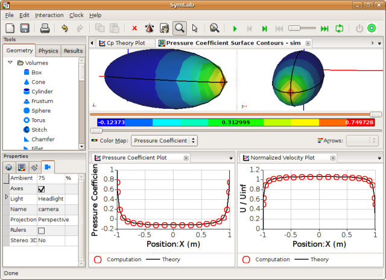

Future of Commercial CFD
Having covered the Origins of Commercial CFD and the Evolution of Commercial CFD it seems only fitting that I stick my neck out and provide predictions on the future of CFD. Let's start by extrapolating from recent events and use the analogous CAD market as a reference.
Consolidation
Recent events in the Computational Fluid Dynamics (CFD) market seem to have favored consolidation (through mergers and acquisitions) of established CFD companies:
- ANSYS bought Fluent for US$630 million, having already bought CFX
- ESI Group bought CFDRC's software business, including CFD and multi-physics applications
- Flomerics, a leader in electronics cooling CFD, bought Nika and its EFD software line
So is this pattern of consolidation likely to continue? The one remaining large, independent CFD vendor is CD-adapco, which would surely make a juicy target for a large CAD company such as Dassault Systems (maker of CATIA), which does not have CFD in its SIMULIA multi-physics line up. There are also a number of smaller CFD vendors, such as Blue Ridge Numerics with their cfdesign software, that could make for a good acquisition to compliment the multi-physics offering say of Autodesk's Inventor.
New Competitors
Ironically, consolidation is also a force in liberating talent that goes on to found new competing businesses. Within any takeover or merger there is typically overlap in business operations, such as sales, support and software development, which usually leads to an exodus of talent. Also key developers and founders often have difficulty adjusting to a new bigger pond where they are not the biggest fish. When you add in the money that founders and key personnel are likely to have received from a buyout, you have the perfect ingredients for the formation of new competing companies - i.e., talent, experience and money.
A good example of a serial entrepreneur in the CAD industry is Michael Payne, who has either founded or cofounded 3 CAD companies - Parametric Technology Corporation (PTC - makers of ProEngineer), SolidWorks (sold to Dassault Systems) and recently SpaceClaim. Is there a budding Michael Payne in the CFD industry? I guess only time will tell, but I'm confident that there will be new CFD startups due to this talent liberation cycle set in motion by the consolidation of CFD vendors.
Open Source
The open source software movement can call upon an enormous software development community that is providing software that competes with every branch of the traditional closed source commercial software community. The poster child for open source is Linux, which has proved popular amongst engineering companies as a cost-effective way to produce high performance computing (HPC) clusters for numerically intensive applications, such as CFD.
Caedium Running Under Linux
Open source software, such as Open Cascade, wxWidgets and VTK, makes it feasible for small startups, such as Symscape, to rapidly produce affordable, user-friendly, next-generation Computer-Aided Engineering (CAE) systems, such as Caedium. Symscape is one of many companies that by 'standing on the shoulders of giants' have rapidly broken into an established market.
A pioneer in open source CFD is OpenCFD which develops an advanced open source CFD software toolkit called OpenFOAM, funded by contracted development and support. As an aside, OpenCFD was originally called Nabla, which sold FOAM (the commercial predecessor of OpenFOAM), and was founded by Henry Weller. after receiving aAs a measure of the high standing of Weller's group - approximately a year after Nabla was founded it received a consulting contact from CFD powerhouse Fluent.
The availability of high quality, open source software has significantly lowered the barrier to entry for virtually all software intensive businesses. So in one form or another open source has already played a role in the CFD industry and I believe its role in the future is likely to increase, challenging the practices and pricing of established CFD vendors.
Pricing
Typically when consolidation occurs in a market, prices tend to rise. Have you noticed that in the US, cellular phone and cable TV subscription prices have increased with time after consolidation of the companies in these markets? With near monopolistic control of supply, high demand and high barriers to entry, companies can dictate prices.
The CAE market, and CFD in particular, has seen prices remain stubbornly high (US$10,000s) and recent consolidation is unlikely to help in the short term. However, there is hope on the horizon. The talent liberated from these mergers and acquisitions will bring a full spectrum of CFD options (in terms of features and prices) to market that are likely to put pressure on prices to come down. Just look at the CAD market which provides an impressive spectrum of products and prices, ranging from Alibre Design Xpress which is free to CATIA at US$16,500.
Caedium is an example of a new generation of affordable and easy-to-use CAE systems - I doubt it will be the only one given the forces of innovation recently set in motion by consolidation of the CFD market and the availability of open source software.
'Gather ye rosebuds while ye may' CFD vendors, for competition is on its way.
Feedback
Questions? Ideas? Problems?

Recent blog posts
- CFD Simulates Distant Past
- Background on the Caedium v6.0 Release
- Long-Necked Dinosaurs Succumb To CFD
- CFD Provides Insight Into Mystery Fossils
- Wind Turbine Design According to Insects
- Runners Discover Drafting
- Wind Tunnel and CFD Reveal Best Cycling Tuck
- Active Aerodynamics on the Lamborghini Huracán Performante
- Fluidic Logic
- Stonehenge Vortex Revealed as April Fools' Day Distortion Field
 Get our Blog feed
Get our Blog feed
Comments
The cost of sales and directors
What will be a problem for the CFD vendors will be the increasing and run-away cost of sales due to competition in the market: sales force of CFD vendors visits their clients with 3 or 4 support engineers and 1 or 2 vice-president-director-leader-of-my-ass. This is actually useless, it is only expenses.
More Consolidation: Autodesk Buys Moldflow
Yet another acquisition, this time Autodesk has announced it is to buy Moldflow for US$297 million. Moldflow was founded in 1978 by Colin Austin and went on to become the largest exporter of technical software in Australia. Moldflow is used to analyze the flow of plastic during a molding process.
Flomerics is Aquisition Target
Mentor Graphics today made an unsolicited bid to buy Flomerics. Flomerics rejected the bid and cited "...interest from several other parties." Mentor Graphics already holds a 26% stake in Flomerics.
Autodesk in talks with Flomerics
After brushing aside an unsolicited buyout offer from Mentor Graphics, it appears that Autodesk is now interested in Flomerics.
Flomerics Bought by Mentor Graphics
Flomerics has recommended its share holders accept a revised takeover bid (US$60 million) from Mentor Graphics, after rejecting an earlier bid.
In an interesting twist Mentor Graphics recently rejected an unsolicited takeover bid, valued at US$1.6 billion, from rival Cadence.
Autodesk buys ALGOR
Autodesk has completed (Jan, 21, 2009) the acquisition of ALGOR, the multi-physics analysis tools provider for US$34 million. The stage is now set for Autodesk Inventor to tightly integrate the ALGOR suite of analysis tools which include CFD and FEA.
Autodesk buys Blue Ridge Numerics
CFdesign from Blue Ridge Numerics was brought into the every expanding Autodesk family in March 11, 2011 for US$39 Million.
Mentor Graphics acquires Flowmaster Group
Mentor Graphics recently acquired Flowmaster Group to add 1D CFD to their existing Flomerics acquired CFD offering.
Exa IPO
In an interesting twist, rather than being acquired Exa turned to an Initial Public Offering (IPO) on the NASDAQ to raise funds. The IPO occurred on June 28, 2012.
A break down of the US$62.5 million IPO showed:
$38.8 million - Exa balance sheet
$19.4 million - shareholders (cashing out)
$4.4 million - underwriters and commission
Source: Update: Exa IPO a done deal, Schnitger Corporation
Siemens acquires CD-adapco
Siemens has agreed to purchase CD-adapco for a cool US$1B, counter to my prediction made in 2008 that it would be Dassault Systems. However, according to the rumor mill Dassault was part of the bidding process but dropped out and decided to concentrate on its own in-house CFD development efforts.
XFLOW and SC bought as well
You didn't mention that Software Crade (of SC/Tetra for example) was bought by MSC.
Or that XFLOW was bought by Dassault.
Siemens bought Mentor Graphics
Or that Siemens bought Mentor Graphics for US$4.5 Billion.